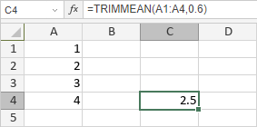

TRIMMEAN funkcija
Funkcija TRIMMEAN je jedna od statističkih funkcija. Koristi se za izračunavanje srednje vrednosti unutrašnjeg dela skupa podataka. Funkcija TRIMMEAN izračunava srednju vrednost tako što isključuje određeni procenat tačaka podataka sa gornjih i donjih krajeva skupa podataka.
Sintaksa
TRIMMEAN(array, percent)
Funkcija TRIMMEAN ima sledeće argumente:
| Argument | Opis |
|---|---|
| array | Opseg numeričkih vrednosti koji se skraćuje i za koji se izračunava prosečna vrednost. |
| percent | Ukupan procenat tačaka podataka koje treba isključiti iz izračunavanja. Numerička vrednost veća ili jednaka 0, ali manja od 1. Broj isključenih tačaka podataka zaokružuje se nadole na najbliži umnožak broja 2. Na primer, ako array sadrži 30 vrednosti, a percent iznosi 0,1, 10 procenata od 30 tačaka je 3. Ova vrednost se zaokružuje nadole na 2, tako da se iz svakog kraja skupa podataka uklanja po 1 tačka: 1 sa vrha i 1 sa dna skupa. |
Napomene
Kako primeniti funkciju TRIMMEAN.
Primeri
Slika ispod prikazuje rezultat koji vraća funkcija TRIMMEAN.
